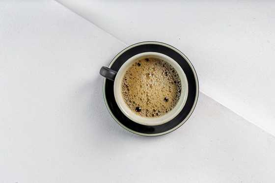
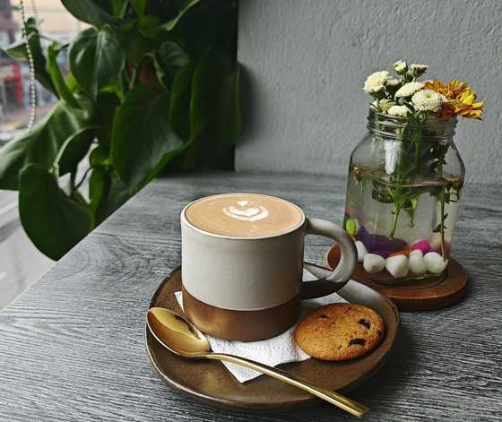

About
見つけた人だけが入れる、
静かな一杯の場所。
harvest COFFEE STOREは、熊本県山鹿市の方保田(かたほだ)にある珈琲屋です。2022年1月、田園の広がるこの地にオープンしました。
入口に看板は出ていません。入口の右下に「open」の表示が灯っていれば、営業中の合図だと紹介されています。駐車場もあります。
店主が一杯ずつ丁寧に淹れるハンドドリップのコーヒーと、ラテアートのカフェラテが紹介されています。シンプルで落ち着いた店内で、純粋にコーヒーの味を楽しみたい大人の方に親しまれているお店です。
店名の「harvest(収穫)」の意味やオーナーさまの想いは確認できていません。このページの「田んぼの収穫」というイメージは、制作側のイメージです。


Menu
豆を選んで、ゆっくり淹れる。
紹介されているメニューは次のとおりです。価格・詳しい内容は準備中です。




Voice
お客様の声(イメージ例)
以下は制作側が作成したイメージ例で、実在のお客様の声ではありません。
イメージ例
看板がなくて少し迷いましたが、入口の「open」の表示を見つけてほっとしました。静かな店内で飲むハンドドリップが、ゆっくり体にしみました。
ご来店のお客様(イメージ)
イメージ例
田んぼ道をドライブした帰りに立ち寄りました。ラテアートがきれいで、飲むのがもったいないくらい。駐車場があるのも助かります。
ご来店のお客様(イメージ)
イメージ例
豆を選べるのが楽しいです。店主さんに相談しながら決める時間も含めて、ひとりでゆっくり過ごせる大切な場所になりました。
ご来店のお客様(イメージ)

Access
アクセス・お店の情報
- 所在地
- 〒861-0382
熊本県山鹿市方保田 字堤の下3148-4 - 電話
- 準備中
- 営業時間
- 準備中
- 定休日
- 準備中
- 駐車場
- あり(と紹介されています)
- @harvest_coffee_store
看板がないため、入口右下の「open」表示が目印と紹介されています。営業日・時間は最新の情報をInstagramでご確認ください。